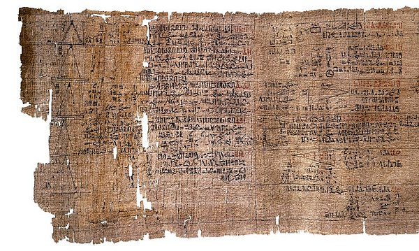
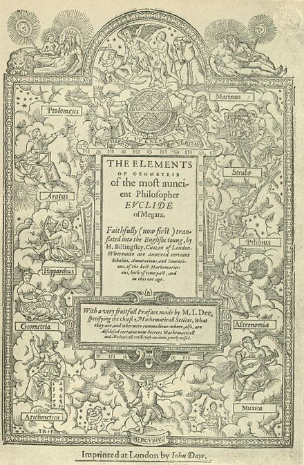

1700 BCE |
The Rhind papyrus (shown to the right) is an ancient egyptian document that describes early egyptian geometry. It documents the first known method for determining the area of a circular field. It uses a value of approximately 3.16 for π. |
 |
300 BCE |
The Euclid's Elements is a 13 book mathematical treatise from Greek mathematician Euclid. It lists some properties of circles. |
 |
353 BC |
The seventh letter of Plato is one of the many epistles that were ascribed to Plato, an Athenian Philosopher from the classical era of Ancient Greece. It contains a detailed description and definition of the circle. He also explains the perfect circle. |
|
1880 CE |
Carl Louis Ferdinand von Lindemann was a German mathematician who proved that π is transcendental which settled the well known problem of squaring the circle. Its impossible. |